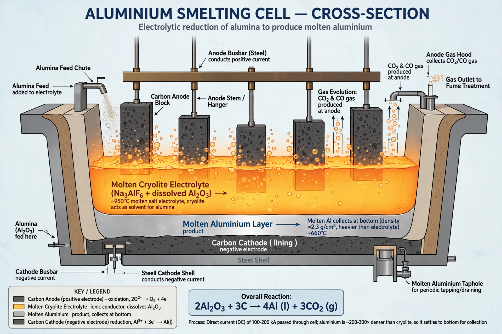

From Wikipedia, the free encyclopedia
| Hall–Héroult process | |
|---|---|
 An electrolytic reduction cell ("pot") | |
| Type | Electrochemical process |
| Invented | 1886 |
| Inventors | Charles Martin Hall; Paul Héroult |
| Feedstock | Alumina (Al2O3) dissolved in molten cryolite |
| Product | Aluminium metal |
The Hall–Héroult process is the major industrial method for smelting aluminium. It involves dissolving aluminium oxide (alumina, obtained from bauxite via the Bayer process) in molten cryolite (Na3AlF6) and electrolysing the melt to produce pure aluminium metal. The process was invented independently and almost simultaneously in 1886 by the American Charles Martin Hall and the Frenchman Paul Héroult — both aged 23 — and it remains the basis of virtually all primary aluminium production today.
Pure alumina melts above 2,000 °C, far too hot for practical electrolysis. Dissolving it in cryolite lowers the working temperature to about 940–980 °C. In the cell, direct current passes from carbon anodes through the bath to a carbon-lined cathode. Aluminium ions are reduced at the cathode to molten aluminium, which is denser than the bath and pools at the bottom, where it is periodically siphoned off. Oxygen liberated at the anodes reacts with the carbon, consuming the anodes as carbon dioxide:
2 Al2O3 + 3 C → 4 Al + 3 CO2
Modern smelters run hundreds of cells ("pots") connected in series, each operating at only a few volts but at currents of 150,000–600,000 amperes. The process is extremely electricity-intensive — roughly 13–15 kWh per kilogram of aluminium — so smelters are sited near cheap power, historically hydroelectricity. Aluminium produced this way earned the nickname "solid electricity".
Before 1886 aluminium was a precious metal, more expensive than silver; Napoleon III famously reserved aluminium cutlery for his most honoured guests. Hall filed his US patent in 1888 and co-founded the Pittsburgh Reduction Company, which became Alcoa. The dramatic fall in price turned aluminium into a structural metal for transport, packaging, construction and electrical transmission. Héroult went on to invent the electric arc furnace for steel.
The process emits carbon dioxide from anode consumption and electricity generation, and under upset conditions can release perfluorocarbons (CF4, C2F6), potent greenhouse gases, during "anode effects". Spent cell linings and bauxite residue ("red mud") are significant waste streams, and the industry is a major focus of decarbonisation research, including inert-anode technologies.